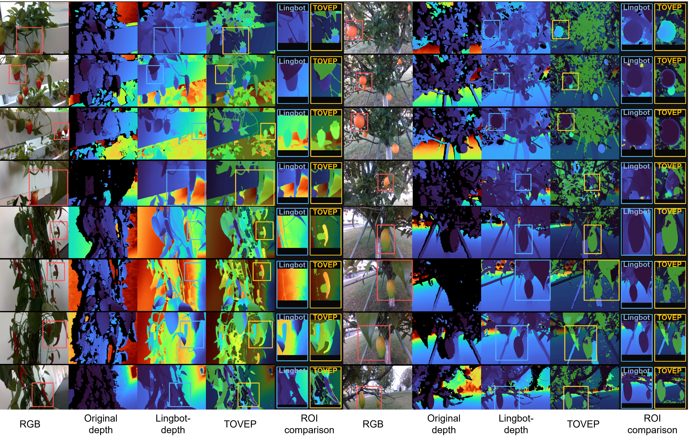
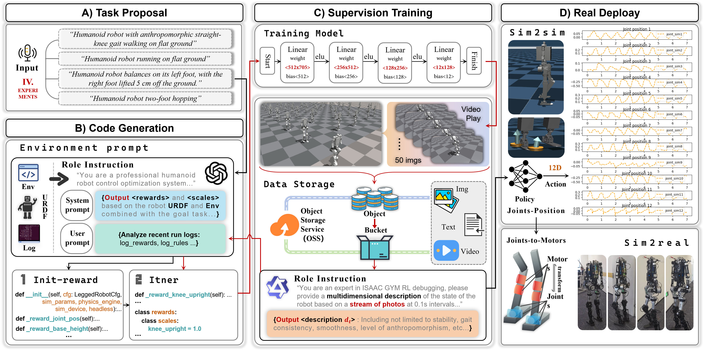
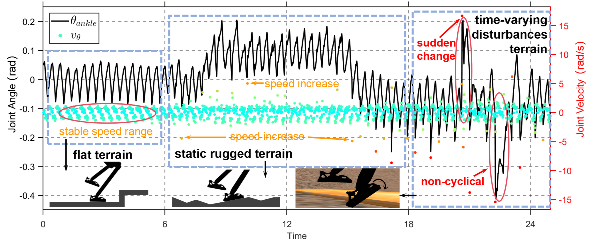
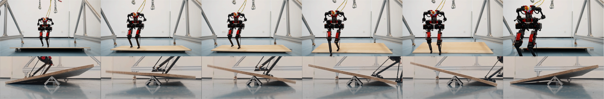

Article
My Recent Publications
Selected research in multimodal intelligence, humanoid control, and robotic automation.
July 2025
CoPickVLM: A Vision-Language Model Guided Dual-Arm Collaborative System for Occlusion-Aware Tomato Harvesting
Occlusion-aware recognition Tomato harvesting Dual-arm robot Vision-language model Collaborative manipulation Agricultural automation
This paper presents CoPickVLM, an occlusion-aware tomato recognition and dual-arm collaborative harvesting system based on vision-language model (VLM) reasoning. The system integrates occlusion-aware recognition and dual-arm coordination strategies. It decomposes harvesting into three semantic subtasks and applies a dual-arm control scheme where one arm removes occlusions and the other cuts.(Currently under revision.)

June 2025
MotionVL: Visual-Language Supervision for Guiding Reinforcement Learning in Humanoid Motion
Reinforcement learning Generative reward Large language models Multimodal supervision
This work introduces MotionVL, a novel framework for humanoid reinforcement learning that leverages multimodal large models to automate reward generation and semantic supervision. A Vision-Language Model encodes observations into natural language, while an LLM generates aligned reward functions. The closed-loop structure improves generalization and human-likeness. Experiments on straight-leg walking validate the method’s effectiveness over traditional handcrafted reward design.

March 7, 2025
DCM-based Dynamic Stable Walking under Terrain-Induced Time-Varying Disturbances for Humanoid Robots
Humanoid robot Dynamic balance control Capturability Time-varying disturbance
When humanoid robots walk on challenging terrain such as shaking platforms, time-varying disturbances can destabilize balance. This paper proposes a DCM-based time-varying disturbance walking (DCM-TVDW) method. It adjusts center of mass and stride height through variable height stabilization and integrates DCM with N-step capturability. This allows multi-step recovery from unstable states. Experiments show that the SJ-Bruce robot can walk stably on a platform with 22° inclination changes using this method.

